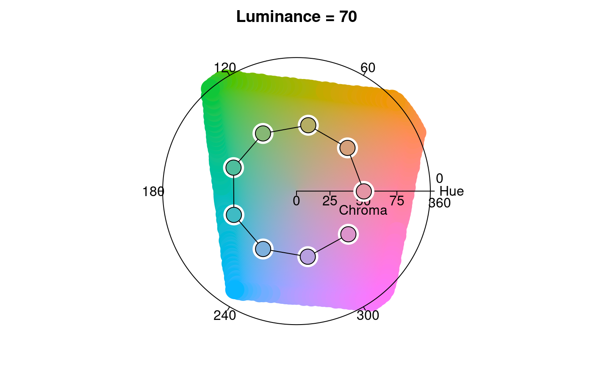
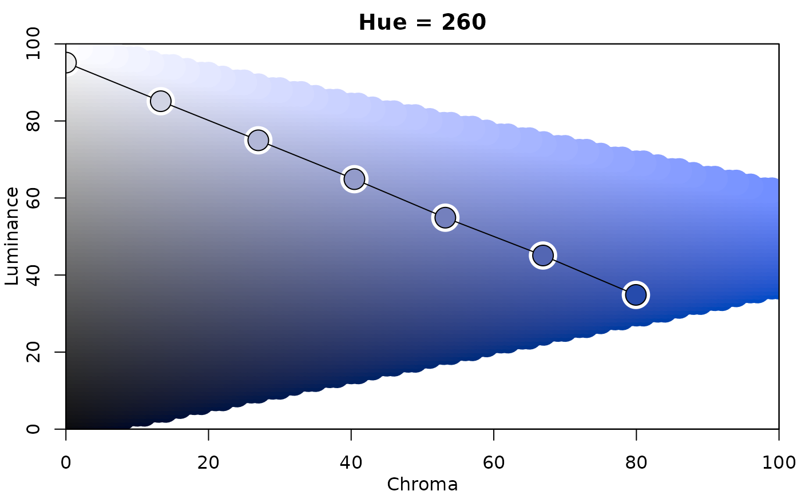
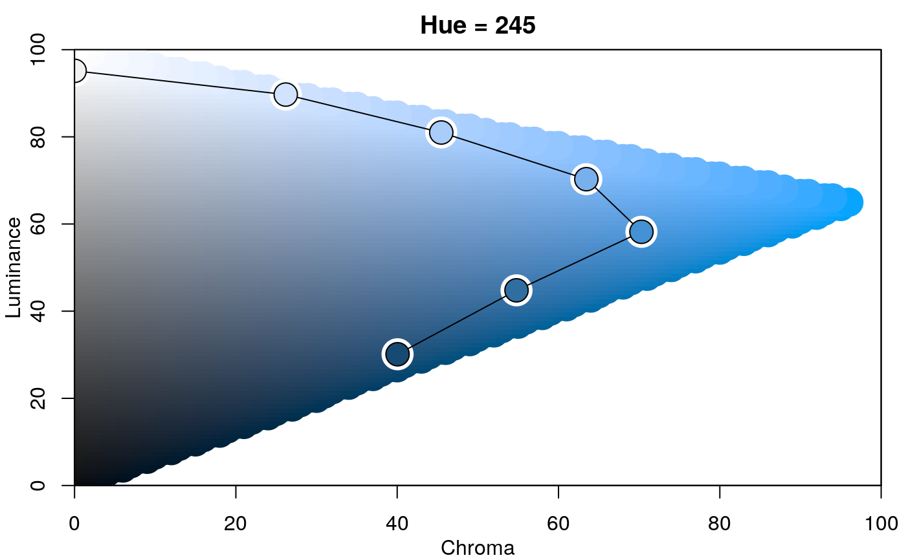
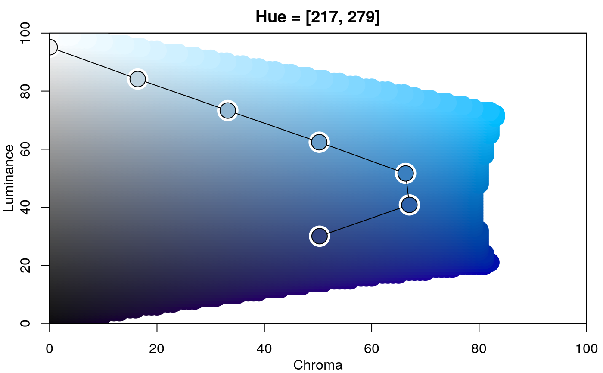
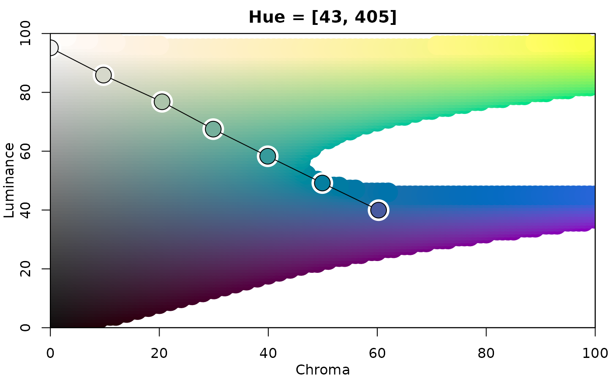
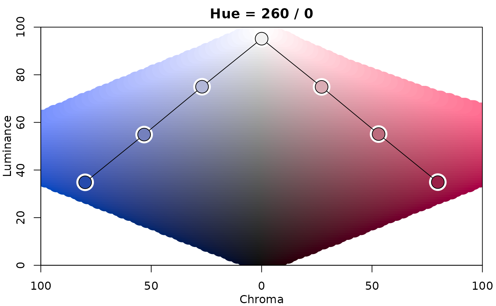

hclplot.RdVisualization of color palettes in HCL space projections.
hclplot( x, type = NULL, h = NULL, c = NULL, l = NULL, xlab = NULL, ylab = NULL, main = NULL, cex = 1, axes = TRUE, bg = "white", lwd = 1, size = 2.5, ... )
| x | character vector containing color hex codes, or a |
|---|---|
| type | type character specifying which type of palette should be visualized
( |
| h | numeric hue(s) to be used for |
| c | numeric. Maximal chroma value to be used. |
| l | numeric luminance(s) to be used for |
| xlab, ylab, main | character strings for annotation, by default generated from the type of color palette visualized. |
| cex | numeric character extension. |
| axes | logical. Should axes be drawn? |
| bg, lwd, size | graphical control parameters for the color palette trajectory. |
| … | currently not used. |
hclplot invisibly returns a matrix with the HCL coordinates corresponding to x.
The function hclplot is an auxiliary function for illustrating
the trajectories of color palettes in two-dimensional HCL space projections.
It collapses over one of the three coordinates (either the hue H or the
luminance L) and displays a heatmap of colors combining the remaining
two dimensions. The coordinates for the given color palette are highlighted
to bring out its trajectory.
The function hclplot has been designed to work well with the
hcl_palettes in this package. While it is possible to apply
it to other color palettes as well, the results might look weird or confusing
if these palettes are constructed very differently (e.g., as in the highly
saturated base R palettes).
More specifically, the following palettes can be visualized well:
Qualitative with (approximately) constant luminance. In this case,
hclplot shows a hue-chroma plane (in polar coordinates), keeping
luminance at a fixed level (by default displayed in the main title of
the plot). If the luminance is, in fact, not approximately constant,
the luminance varies along with hue and chroma, using a simple linear
function (fitted by least squares).
hclplot shows a chroma-luminance plane, keeping hue at a fixed
level (by default displayed in the main title of the plot). If the hue
is, in fact, not approximately constant, the hue varies along with
chroma and luminance, using a simple linear function (fitted by least
squares.
Diverging with two (approximately) constant hues: This case is visualized with two back-to-back sequential displays.
To infer the type of display to use, by default, the following heuristic is used: If luminance is not approximately constant (range > 10) and follows rougly a triangular pattern, a diverging display is used. If luminance is not constant and follows roughly a linear pattern, a sequential display is used. Otherwise a qualitative display is used.
Zeileis A, Fisher JC, Hornik K, Ihaka R, McWhite CD, Murrell P, Stauffer R, Wilke CO (2019). “ccolorspace: A Toolbox for Manipulating and Assessing Colors and Palettes.” arXiv:1903.06490, arXiv.org E-Print Archive. http://arxiv.org/abs/1903.06490
## for qualitative palettes luminance and chroma are fixed, varying only hue hclplot(qualitative_hcl(9, c = 50, l = 70))## single-hue sequential palette (h = 260) with linear vs. power-transformed trajectory hclplot(sequential_hcl(7, h = 260, c = 80, l = c(35, 95), power = 1))## advanced single-hue sequential palette with triangular chroma trajectory ## (piecewise linear vs. power-transformed) hclplot(sequential_hcl(7, h = 245, c = c(40, 75, 0), l = c(30, 95), power = 1))## multi-hue sequential palette with small hue range and triangular chroma vs. ## large hue range and linear chroma trajectory hclplot(sequential_hcl(7, h = c(260, 220), c = c(50, 75, 0), l = c(30, 95), power = 1))## balanced diverging palette constructed from two simple single-hue sequential ## palettes (for hues 260/blue and 0/red) hclplot(diverging_hcl(7, h = c(260, 0), c = 80, l = c(35, 95), power = 1))